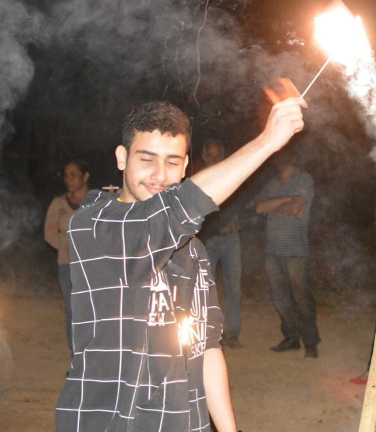

Renato Versiani
Developer
Hi! I'm Renato, more commonly known as Dr4kk0nnys!
I am from Brazil, and speak fluent English since 12.
My background with programming started at 11 years old, making Minecraft mods with java.
After a long path, I've mastered Javascript, Typescript, Python and numerous concepts, such as OOP, Functional Programming, Micro contracts, Design Patterns, etc ...
The reason I speak English with such ease is because of this early experience. I'm not the best, but I'm trying to improve every day.
renatoversianidrakk@gmail.com
Montes Claros, MG, Brazil.
+55 (38) 9 8402-2924
Expertise
- Functional Programming
- OOP
- Software Patterns
- Software Quality
- Highly Performing & Maintainable code
Languages
- English
- Portuguese
- Spanish
- French
Interests
- Camping
- Cooking
- Hiking
- Reading
- Drawing
- Playing
Skills
- Typescript
- Javascript
- React
- NodeJS
- Python
- Java
- HTML
- CSS
- Backend
- Frontend
- GIT
- REST
Work Experience
- Creator and owner of webrcenter.com. A full stack social media app with an algorithm that automatically retrieves content from other social medias.
- Django Full Stack Developer for 6 months at Mupi Systems. Worked mainly at etalentos.com.br and textualiza.com.br.
- Developer and freelancer for over 2 years.
- Full Stack Developer for 1 and a half years at Blue Informatica. Worked mainly for their websystem and website.
- Unity Game Developer for almost 2 years. Worked with both 2d and 3d games, you can check the free ones, yet to be released.
Achievements
- Improved the overall code and readability of a giant project called E-Talentos for Mupi Systems, while simultaneously working on new features and functionalities.
- Worked as both team player and individual on a project for Blue Informatica that was far out of my scope ( Network of computers simultaneously transferring hundreds of mbs of data every second ). Improving the performance of the overall network by 11% in only two weeks.
- Automated a bot for Instagram, creating my first almost successful company called Social G, at the time, my biggest competitor had less than half of the functionalities my program had.
- Automated many things, with complex challenges along the way. Facebook Sell.
- Created my first social media through automation, in a domain called webrcenter.com